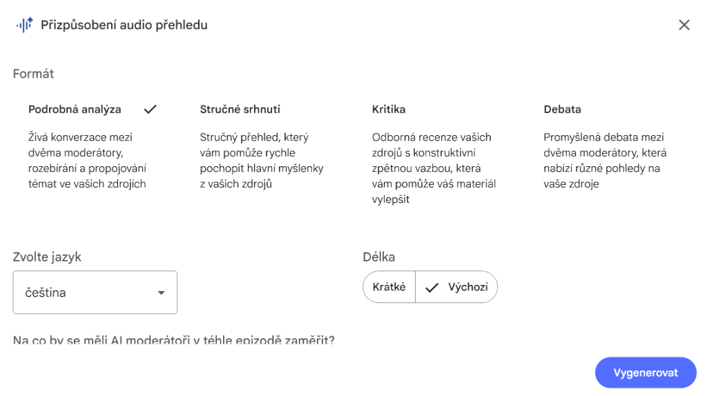

Po kliknutí na "Audio pøehled" se zobrazí dialog s nastavením:

Formát: Podrobná analýza, Struèné shrnutí, Kritika, Debata | Jazyk: Èeština | Délka: Krátké nebo Výchozí
V textovém poli mùžete specifikovat, na co se má AI moderátor zamìøit (napø. "Zamìøit se jen na èlánky o Itálii").
Tipy pro audio pøehledy
Kontrola délky
Audio typicky trvá 10-20 min. Chceš-li kratší, specifikuj: "Vytvoø 5minutové audio shrnutí klíèových bodù".
Cílení obsahu
Pro velké sešity nejprve diskutuj v chatu o tématu, pak klikni na Audio - použije kontext konverzace!
Kdy poslouchat
Ideální pøi cestování, cvièení, domácích pracích - kdykoli potøebuješ uèit hands-free.
Doporuèený workflow
Krok za krokem použití Audio pøehledu:
- Pøíprava zdrojù: Nahraj materiály do NotebookLM (texty, èlánky, poznámky)
- Volba témat: V chatu specifikuj zamìøení: "Audio zamìøené na [téma]"
- Generování: Klikni na Audio pøehled v Studio
- Poslech: Stáhni nebo poslouchej pøímo v NotebookLM
- Využití: Sdílej se studenty nebo použij pro vlastní pøípravu
Kombinuj použití: Nejprve vytvoø audio shrnutí pro žáky, pak audio zápis z porady pro kolegy. Každé audio slouží jinému úèelu!
Use Cases - Praktické pøíklady použití
Shrnutí kapitoly › krátká verze pro žáky
Zhuštìné audio shrnutí uèiva
?? Co to je
Vytváøí krátké audio shrnutí kapitoly max na 10-15 minut, které mohou žáci poslouchat jako pøípravu nebo opakování.
Scénáø: Žáci potøebují rychlé opakování pøed testem z biologie.
Postup:
- V chatu: "Vytvoø shrnutí kapitoly o bunìèném dìlení. Doplò pøíklady, typické chyby žákù a metaforu pro lepší pochopení jak probíhá mitóza"
- AI odpoví s textovým shrnutím
- Potom: "Vytvoø z toho audio pøehled"
- Klikni na Audio pøehled › žáci mají 10min podcast k poslechu
Pøepis hlasových poznámek uèitele
Z hlasu na strukturovaný text
?? Co to je
Nahraješ své hlasové poznámky (nápady, úkoly, reflexe) a NotebookLM je pøepíše a strukturuje do pøehledného formátu.
Situace: Po hodinì nahraješ reflexi na mobil - co fungovalo, co ne, nápady na pøíštì.
Workflow:
- Nahraj audio poznámku do NotebookLM jako zdroj
- V chatu: "Z mých hlasových poznámek vytvoø èistý pøehled: co fungovalo, co zlepšit, úkoly na pøíštì, nápady do budoucna"
- Dostaneš strukturovaný dokument pøipravený k archivaci
Porada › èistý zápis + akèní body
Strukturovaný zápis z porady
?? Co to je
Z nahrávky porady vytvoøí strukturovaný zápis se shrnutím, úkoly, odpovìdnostmi a rozhodnutími.
Scénáø: Porada pøedmìtové komise trvá hodinu, potøebuješ zápis.
Workflow:
- Nahraj audio záznam porady do NotebookLM
- Použij prompt pro strukturovaný zápis
- Dostaneš: pøehled témat, kdo má co udìlat do kdy, co je potøeba doøešit
- Bonus: Mùžeš i øíct "Vytvoø krátké audio shrnutí pro kolegy, kteøí nebyli"
Uèitelský "mozkový archiv"
Váš osobní uèitelský manuál
?? Co to je
Notebook, kde máš vše — pøípravy, èetby, zákony, scénáøe, reflexe, nápady. Audio pøehled ti pomùže procházet a rekapitulovat obsah.
Koncept: Bìhem roku nahráváš do jednoho sešitu své poznámky, reflexe, úspìšné aktivity.
Využití:
- Pøed zaèátkem školního roku: "Vytvoø audio pøehled mých uèitelských principù a osvìdèených postupù"
- Pøed obtížnou situací: "Jak jsem v minulosti øešil konflikty mezi žáky?"
- Pro mentoring: "Shrò mùj pøístup k výuce pro kolegu zaèáteèníka"
?? TOP 10 Nejužiteènìjších Use Cases pro Audio
Vybrali jsme pro vás 10 nejpraktiètìjších zpùsobù použití audio funkcí NotebookLM v každodenní výuce.
Rychlá pøíprava na hodinu
Pro: Uèitele cestou do školy
Audio verze tematického výkladu
Pro: Flexibilní uèení studentù
Audio vysvìtlení domácího úkolu
Pro: Podpora žákù s nepochopením zadání
Audio shrnutí dlouhého textu
Pro: Rychlé zpracování kapitol
Audio návod k laboratorní práci
Pro: Bezpeènost a jasný postup
Audio vysvìtlení výsledkù testu
Pro: Hromadnou zpìtnou vazbu po testech
Audio shrnutí projektové práce
Pro: Motivaèní úvod k projektùm
Audio podpora pro absentéry
Pro: Žáky, kteøí chybìli ve škole
Audio pro suplujícího kolegu
Pro: Rychlý briefing kolegy
Audio verze literárního rozboru
Pro: Pøípravu k maturitì
Máme pro vás pøipravené prompty s možností kopírování!
?? Prohlédnìte si databázi promptù ›Máme pro vás pøipravených celkem 30 zpùsobù použití audio funkcí! Prohlédnìte si kompletní katalog vèetnì všech promptù.
?? Zobrazit všech 30 Audio Use Cases ›